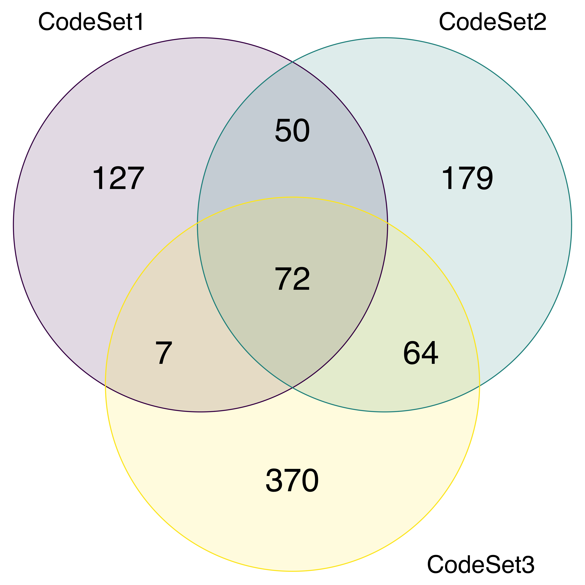
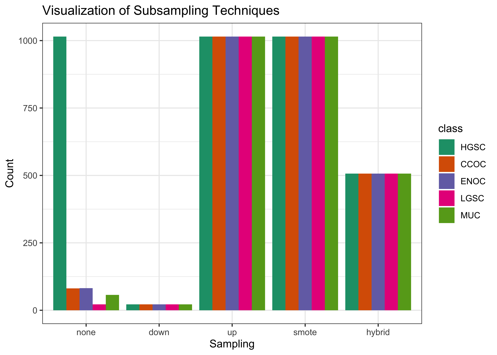

2 Methods
2.1 Pre-Processing
2.1.1 Case Selection
Raw data comes from three NanoString CodeSets (CS): CS1, CS2, and CS3. We divide the data into training, confirmation, and validation sets by using samples from these sets of cohorts:
- Training
- CS1: MAYO, OOU, OOUE, VOA, MTL
- CS2: MAYO, OOU, OOUE, OVAR3, VOA, ICON7, JAPAN, MTL, POOL-CTRL
- CS3: OOU, OOUE, VOA, POOL-1, POOL-2, POOL-3
- Confirmation:
- CS3: TNCO
- Validation:
- CS3: DOVE4
2.1.2 Quality Control
Samples that failed any of the following NanoString quality control conditions were removed:
linFlag: linearity of positive controls with positive control concentrations is less than 0.95, or linearity measures are unknownimagingFlag: percent of field of view is less than 75%spcFlag: smallest positive control is less than the lower limit of detection (negative control average expression less two times the negative control standard deviation), or negative control average expression equals zeronormFlag: signal to noise ratio less than 100, or percent of genes detected is less than 50. Note: these thresholds were determined by examining the [%GD vs. SNR] relationship below.
2.1.3 Normalization
The full training set (n=1243) is comprised of data from CodeSets (CS) 1, 2, and 3. All CodeSets were first normalized to housekeeping genes, then different approaches were taken for subsequent normalizations of each CodeSet.
CS1 was normalized to CS3 using five “Random1” reference samples. These reference samples are randomly selected from CS1 among all samples in the three CodeSets that share common otta IDs, such that we obtain one sample from each of the five histotypes. Then, we use the reference-based method to normalize CS1 to CS3 across their common genes, for the remaining expression samples Talhouk et al. (2016).
Similarly, CS2 was normalized to CS3 using the same “Random1” reference samples, now taken from CS2. Normalization was performed across common genes between CS2 and CS3.
For CS3, we first split the dataset into three sites: Vancouver, USC, and AOC. We use the CS3-Vancouver subset as a “reference standard”, and normalized CS3-USC and CS3-AOC to CS3-Vancouver using a “Random1” reference set randomly selected among samples common between Vancouver, USC, and AOC. Finally, the CS3-Vancouver expression samples are included in the training set without further normalization.
2.1.4 Final Processing
We map ovarian histotypes to all remaining samples and keep the major histotypes for building the predictive model: high-grade serous carcinoma (HGSC), clear cell ovarian carcinoma (CCOC), endometrioid ovarian carcinoma (ENOC), low-grade serous carcinoma (LGSC), mucinous carcinoma (MUC).
Duplicate cases (two samples with the same ottaID) were removed before generating the final training set to use for fitting the classification models. All CS3 cases were preferred over CS1 and CS2, and CS3-Vancouver cases were preferred over CS3-AOC and CS3-USC when selecting duplicates.
The final training set used only genes that were common across all three CodeSets.
2.2 Classifiers
We use 4 classification algorithms in the supervised learning framework for the Training Set. The pipeline was run using SLURM batch jobs submitted to a partition on a CentOS 7 server. All resampling techniques, pre-processing, model specification, hyperparameter tuning, and evaluation metrics were implemented using the tidymodels suite of packages. The classifiers we used are:
- Random Forest (
rf) - Support Vector Machine (
svm) - XGBoost (
xgb) - Regularized Multinomial Regression (
mr)
2.2.1 Resampling of Training Set
We used a nested cross-validation design to assess each classifier while also performing hyperparameter tuning. An outer 5-fold CV stratified by histotype was used together with an inner 5-fold CV with 2 repeats stratified by histotype. This design was chosen such that the test sets of the inner resamples would still have a reasonable number of samples belonging to the smallest minority class.
The outer resampling method cannot be the bootstrap, because the inner training and inner test sets will likely contain the same samples as a result of sampling with replacement in the outer training set. This phenomenon might result in inflated performance as some observations are used both to train and evaluate the hyperparameter tuning in the inner loop.
2.2.2 Hyperparameter Tuning
The following specifications for each classifier were used for tuning hyperparameters:
rfandxgb: The number of trees were fixed at 500. Other hyperparameters were tuned across 10 randomly selected points in a latin hypercube design.svm: Both the cost and sigma hyperparameters were tuned across 10 randomly selected points in a latin hypercube design. We tuned the cost parameter in the range [1, 8]. The range for tuning the sigma parameter was obtained from the 10% and 90% quantiles of the estimation using thekernlab::sigest()function.mr: We generated 10 randomly selected points in a latin hypercube design for the penalty (lambda) parameter. Then, we generated 10 evenly spaced points in [0, 1] for the mixture (alpha) parameter in the regularized multinomial regression model. These two sets of 10 points were crossed to generate a tuning grid of 100 points.
The hyperparameter combination that resulted in the highest average F1-score across the inner training sets was selected for each classifier to use as the model for assessing prediction performance in the outer training loop.
2.2.3 Subsampling
Here are the specifications of the subsampling methods used to handle class imbalance:
- None: No subsampling is performed
- Down-sampling: All levels except the minority class are sampled down to the same frequency as the minority class
- Up-sampling: All levels except the majority class are sampled up to the same frequency as the majority class
- SMOTE: All levels except the majority class have synthetic data generated until they have the same frequency as the majority class
- Hybrid: All levels except the majority class have synthetic data generated up to 50% of the frequency of the majority class, then the majority class is sampled down to the same frequency as the rest.
The figure below helps visualize how the distribution of classes changes when we apply subsampling techniques to handle class imbalance:

2.2.4 Workflows
The 4 algorithms and 5 subsampling methods are crossed to create 20 different classification workflows. For example, the hybrid_xgb workflow is a classifier that first pre-processes a training set by applying a hybrid subsampling method, and then proceeds to use the XGBoost algorithm to classify ovarian histotypes.
2.3 Two-Step Algorithm
The HGSC histotype comprises of approximately 80% of cases among ovarian carcinoma patients, while the remaining 20% of cases are relatively, evenly distributed among ENOC, CCOC, LGSC, and MUC histotypes. We can implement a two-step algorithm as such:
- Step 1: use binary classification for HGSC vs. non-HGSC
- Step 2: use multinomial classification for the remaining non-HGSC classes
Let
\[ \begin{aligned} & X_k = \text{Training data with k classes} \\ & C_k = \text{Class with highest}\;F_1\;\text{score from training}\;X_k \\ & W_k = \text{Workflow associated with}\;C_k \end{aligned} \tag{2.1}\]
Figure 2.4 shows how the two-step algorithm works:
2.3.1 Aggregating Predictions
The aggregation for two-step predictions is quite straightforward:
- Predict HGSC vs. non-HGSC
- Among all non-HGSC cases, predict CCOC vs. LGSC vs. MUC vs. ENOC
2.4 Sequential Algorithm
Instead of training on k classes simultaneously using multinomial classifiers, we can use a sequential algorithm that performs k-1 one-vs-all binary classifications iteratively to obtain a final prediction of all cases. At each step in the sequence, we classify one class vs. all other classes, where the classes that make up the “other” class are those not equal to the current “one” class and excluding all “one” classes from previous steps. For example, if the “one” class in step 1 was HGSC, the “other” classes would include CCOC, ENOC, LGSC, and MUC. If the “one” class in step 2 was CCOC, the “other” classes include ENOC, LGSC, and MUC.
The order of classes and workflows to use at each step in the sequential algorithm must be determined using a retraining procedure. After removing the data associated with a particular class, we retrain using the remaining data using multinomial classifiers as described before. The class and workflow to use for the next step in the sequence is selected based on the best per-class evaluation metric value (e.g. F1-score).
Figure 2.6 illustrates how the sequential algorithm works for K=5, using ovarian histotypes as an example for the classes.
The subsampling method used in the first step of the sequential algorithm is used in all subsequent steps in order to maintain data pre-processing consistency. As a result, we are only comparing classification algorithms within one subsampling method across the entire sequential algorithm.
2.4.1 Aggregating Predictions
We have to aggregate the one-vs-all predictions from each of the sequential algorithm workflows in order to obtain a final class prediction on a holdout test set. Each sequential workflow has to be assessed on every sample to ensure that cases classified into the “all” class from a previous step of the sequence are eventually assigned a predicted class. For example, say that based on certain class-specific metrics we determined that the order of classes in the sequential algorithm was to predict HGSC vs. non-HGSC, CCOC vs. non-CCOC, LGSC vs. non-LGSC, and then MUC vs. ENOC. Figure 2.7 illustrates how the final predictions are assigned:
2.5 Gene Optimization
We want to discover an optimal set of genes for the classifiers while including specific genes from other studies such as PrOTYPE and SPOT. A total of 72 genes are used in the classifier training set.
There are 16 genes in the classifier set that overlap with the PrOTYPE classifier: COL11A1, CD74, CD2, TIMP3, LUM, CYTIP, COL3A1, THBS2, TCF7L1, HMGA2, FN1, POSTN, COL1A2, COL5A2, PDZK1IP1, FBN1.
There are also 13 genes in the classifier set that overlap with the SPOT signature: HIF1A, CXCL10, DUSP4, SOX17, MITF, CDKN3, BRCA2, CEACAM5, ANXA4, SERPINE1, TCF7L1, CRABP2, DNAJC9.
We obtain a total of 28 genes from the union of PrOTYPE and SPOT genes that we want to include in the final classifier, regardless of model performance. We then incrementally add genes one at a time from the remaining 44 candidate genes based on an overall variable importance rank to the set of 28 base genes and recalculate performance metrics. The number of genes at which the performance peaks or starts to plateau may indicate an optimal gene set model for us to compare with the full set model.
Here is the breakdown of genes used and whether they belong to the PrOTYPE and/or SPOT sets:
| Genes | PrOTYPE | SPOT |
|---|---|---|
| TCF7L1 | ✔ | ✔ |
| COL11A1 | ✔ | |
| CD74 | ✔ | |
| CD2 | ✔ | |
| TIMP3 | ✔ | |
| LUM | ✔ | |
| CYTIP | ✔ | |
| COL3A1 | ✔ | |
| THBS2 | ✔ | |
| HMGA2 | ✔ | |
| FN1 | ✔ | |
| POSTN | ✔ | |
| COL1A2 | ✔ | |
| COL5A2 | ✔ | |
| PDZK1IP1 | ✔ | |
| FBN1 | ✔ | |
| HIF1A | ✔ | |
| CXCL10 | ✔ | |
| DUSP4 | ✔ | |
| SOX17 | ✔ | |
| MITF | ✔ | |
| CDKN3 | ✔ | |
| BRCA2 | ✔ | |
| CEACAM5 | ✔ | |
| ANXA4 | ✔ | |
| SERPINE1 | ✔ | |
| CRABP2 | ✔ | |
| DNAJC9 | ✔ | |
| C10orf116 | ||
| GAD1 | ||
| TPX2 | ||
| KGFLP2 | ||
| EGFL6 | ||
| KLK7 | ||
| PBX1 | ||
| LIN28B | ||
| TFF3 | ||
| MUC5B | ||
| FUT3 | ||
| STC1 | ||
| BCL2 | ||
| PAX8 | ||
| GCNT3 | ||
| GPR64 | ||
| ADCYAP1R1 | ||
| IGKC | ||
| BRCA1 | ||
| IGJ | ||
| TFF1 | ||
| MET | ||
| CYP2C18 | ||
| CYP4B1 | ||
| SLC3A1 | ||
| EPAS1 | ||
| HNF1B | ||
| IL6 | ||
| ATP5G3 | ||
| DKK4 | ||
| SENP8 | ||
| CAPN2 | ||
| C1orf173 | ||
| CPNE8 | ||
| IGFBP1 | ||
| WT1 | ||
| TP53 | ||
| SEMA6A | ||
| SERPINA5 | ||
| ZBED1 | ||
| TSPAN8 | ||
| SCGB1D2 | ||
| LGALS4 | ||
| MAP1LC3A |
2.5.1 Variable Importance
Variable importance is calculated using either a model-based approach if it is available, or a permutation-based VI score otherwise. The variable importance scores are averaged across the outer training folds, and then ranked from highest to lowest.
For the sequential and two-step classifiers, we calculate an overall VI rank by taking the cumulative union of genes at each variable importance rank across all sequences, until all genes have been included.
The variable importance measures are:
Random Forest: impurity measure (Gini index)
XGBoost: gain (fractional contribution of each feature to the model based on the total gain of the corresponding features’s splits)
SVM: permutation based p-values
Multinomial regression: absolute value of estimated coefficients at cross-validated lambda value
2.6 Performance Evaluation
2.6.1 Class Metrics
We use the accuracy, sensitivity, specificity, F1-score, kappa, balanced accuracy, and geometric mean, as class metrics to measure both training and test performance between different workflows. Multiclass extensions of these metrics can be calculated except for F1-score, where we use macro-averaging to obtain an overall metric. Class-specific metrics are calculated by recoding classes into one-vs-all categories for each class.
2.6.1.1 Accuracy
The accuracy is defined as the proportion of correct predictions out of all cases:
\[ \text{accuracy} = \frac{TP}{TP + FP + FN + TN} \tag{2.2}\]
2.6.1.2 Sensitivity
Sensitivity is the proportional of correctly predicted positive cases, out of all cases that were truly positive
\[ \text{sensitivity} = \frac{TP}{TP + FN} \tag{2.3}\]
2.6.1.3 Specificity
Specificity is the proportional of correctly predicted negative cases, out of all cases that were truly negative.
\[ \text{specificity} = \frac{TN}{TN + FP} \tag{2.4}\]
2.6.1.4 F1-Score
The F-measure can be thought of as a harmonic mean between precision and recall:
\[ F_{meas} = \frac{(1 + \beta^2) \times precision \times recall}{(\beta^2 \times precision) + recall} \tag{2.5}\]
The \(\beta\) value can be adjusted to place more weight upon precision or recall. The most common value is \(\beta\) is 1, which is also commonly known as the F1-score. A multiclass extension doesn’t exist for the F1-score, so we use macro-averaging to calculate this metric when there are more than two classes. For example, with \(k\) classes, the macro-averaged F1-score is equal to:
\[ {F_1}_{macro} = \frac{1}{k} \sum_{i=1}^{k}{F_1}_{i} \tag{2.6}\]
where each \({F_1}_{i}\) is the F1-score computed frrom recoding classes into \(k=i\) vs. \(k \neq i\).
In situations where there is not at least one predicted case for each of the classes (e.g. for a poor classifier), \({F_1}_{i}\) is undefined because the per-class precision of class \(i\) is undefined. Those \({F_1}_{i}\) terms are removed from the \({F_1}_{macro}\) equation and the resulting value may be inflated. Interpreting the F1-score in such a case would be misleading.
2.6.1.5 Balanced Accuracy
Balanced accuracy is the arithmetic mean of sensitivity and specificity.
\[ \text{Balanced Accuracy} = \frac{\text{Sensitivity} + \text{Specificity}}{2} \tag{2.7}\]
2.6.1.6 Kappa
Kappa is the defined as:
\[ \text{kappa} = \frac{p_0 - p_e}{1 - p_e} \tag{2.8}\]
where \(p_0\) is the observed agreement among raters and \(p_e\) is the hypothetical probability of agreement due to random chance.
2.6.2 AUC
The area under the receiver operating curve (AUC) is calculated by adding up the area under the curve formed by plotting sensitivity vs. 1 - specificity. The Hand-till method is used as a multiclass extension for the AUC.
We did not use AUC to measure class-specific training set performance because combining predicted probabilities in a one-vs-all fashion might be potentially misleading. The sum of probabilities that add up to the “other” class is not equivalent to the predicted probability of the “other” class when using a multiclass classifier.
Instead, we only reported ROC curves and their associated AUCs for the test set performance of the sequential and two-step algorithms.